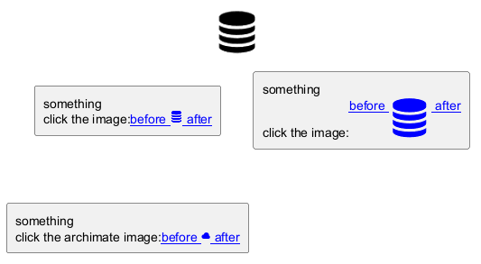

@startuml
set separator none
!include <tupadr3/font-awesome/database>
title <$database>
rectangle "something\nclick the image:[[http://plantuml.com before <$database*0.31> after]]"
rectangle "something\nclick the image:[[http://plantuml.com before <$database> after]]"
rectangle "something\nclick the archimate image:[[http://plantuml.com before <&cloud> after]]"
@enduml